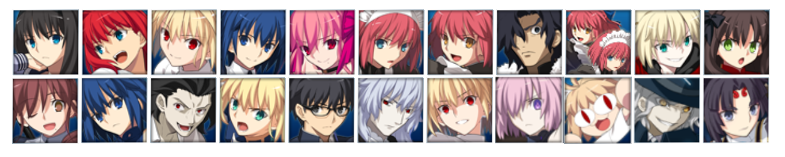
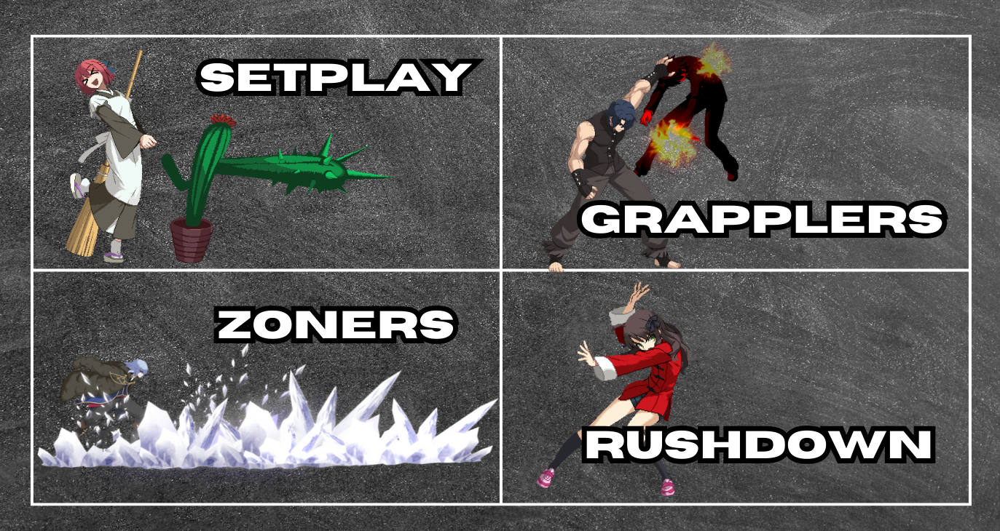
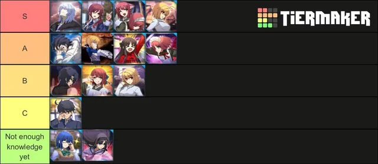

Personagens

Esta página tem o objetivo de ser uma introdução e servir como contexto de como os persongens em jogo de luta são vistos dentro e fora dos jogos.
De modo geral, seus modos de serem ulilizados e força dentro de um jogo precisam de um devido equilíbrio, e esse balanceamento é fundamental para que o jogo seja agradável tanto de um ponto de vista casual quanto competitivo.
Afinal, se um personagem for "apelão demais", ou se todos os personagens forem muito parecidos, isso fará com que um jogo se torne menos interessante e por consequência divertido.
Características e Arquétipos

Em jogos de luta, os personagens possuem diversas características distintas e cada um deles possui seu jeito único de jogar, porém ainda dentro de alguns padrões e arquétipos tradicionais dentro dos FGs.
Sejam personagens rápidos, ou com uma ofensiva muito forte, ou com ferramentas para sempre manter o oponente afastado, ou com pouca vida, seu jeito de jogar com e contra eles será sempre variável, e essa é uma das razões que fazem esse gênero se tornar tão único e interessante.
Serão apresentados abaixos alguns dos termos e arquétipos usados para se referir ao modo dos quais os personagens são utilizados:
- All-Rounders: são os personagens que fazem um pouco de tudo, que possuem praticamente todas as ferramentas ofensivas e defensivas que o jogo tem a oferecer. Entre algumas delas estão: golpes rápidos, golpes com invencibilidade, overheads, etc.
- Grapplers: personagens dos quais utilizam-se bastante dos agarrões (throws) para incorporar seu jogo. Geralmente os throws em jogos de luta não são bloqueáveis e isso faz com que a parte ofensiva desse arquétipo seja especialmente forte.
- Rushdown: conhecidos por ser os personagens "porradeiros", agressivos. Tem como objetivo sempre estarem a uma curta distânica do oponente para que possam usar suas ferramentas mais fortes.
- Setplay: personagens que tem como objetivo te manter em um "vórtex" defensivo. Possuem ferramentas que dificultam a defesa do oponente assim que conseguem acertar algum golpe dele, fazendo com que ele seja atingido novamente e esse loop continua.
- Zoner: como o próprio nome diz, são personagens especializados em manter seus oponentes a longa distância. Por conta disso, geralmente tem dificuldades na defesa quando o oponente consegue se aproximar.
Qual personagem devo utilizar?

Após apresentar os arquétipos de jogos de luta, não há nada melhor do que dar uma introdução dos personagens de Lumina, correto?
Nesta seção, você irá encontrar uma descrição resumida de cada um dos personagens do jogo, junto de alguns jogadores que servem de referência para cada um dos personagens e um pequeno trecho de gameplay deles jogando em alto nível.
Para isto, basta clicar em um dos ícones dos personagens para carregar todas as informações necessárias sobre ele!
Ciel is a versatile rushdown/zoner character with screen-bouncing mobility.
An old Melty Blood mainstay. Ciel can comfortably choose the position to attack from at her own pace, using her high innate move speed, good close-range normal attacks, far backdash, special mobility options and Black Key projectiles.
Lista de jogadores para referência:
sorumei (ソルメイ)
Donnie
Davyll
Arhkma MuddyKipz
Exemplo de gameplay por sorumei (ソルメイ):
Akiha is a character who thrives on locking the opponent down and punishing them with extended combos and setplay.
She can be technical, but a well-played Akiha can make opponent's life hell once she gets them pinned down.
Lista de jogadores para referência:
shijo (四條)
Teal (てぃーる)
Nyss
mossmossmoss
Exemplo de gameplay por shijo (四條):
Hisui is a well-rounded rushdown character. She controls her own space well, but excels when up close and running her strong strike/throw game against the opponent.
Lista de jogadores para referência:
Jing (ジン)
Ajosac96
JurassicOri
Exemplo de gameplay por Jing (ジン):
Kohaku uses her huge normals and unconventional specials to control the midrange before confirming hits into devastating setplay.
Lista de jogadores para referência:
rahika
DannySsB
DrackMae
Exemplo de gameplay por rahika:
Hisui & Kohaku (commonly called Maids) are stance/puppet character(s) who overwhelm their opponents with grimy setups and unrelenting pressure.
The key to their nasty pressure game is their setplay. Hisui prepares toxic bento picnic at various range that acts as a grounded launcher mine, while Kohaku brings out various weird plants to force frametraps and zoning. They can also call the other with a special to lend a hand with their moves to enforce mix-ups (Hisui's run-up normals, Kohaku's setplay and j.C hijinks) leading to wide array of punish and okizeme opportunities.
Lista de jogadores para referência:
tadu (たづ)
toodls
Hubbykun
Exemplo de gameplay por tadu (たづ):
Miyako Arima is a returning character to Melty Blood Type Lumina and a member of the base roster. She's a high-speed rushdown character that excels at close combat.
Lista de jogadores para referência:
nekomiko (ねこみこ)
Phantom
Shao
Exemplo de gameplay por nekomiko (ねこみこ):
Kouma is a defensive brawler/grappler with armor that excels at punishing aggressive opponents
Aspiring Kouma players who take the time to learn his matchups and the fighting game concept of conditioning will be richly rewarded.
Lista de jogadores para referência:
Fowz
ScrawtVermillion
Noppo (のっぽ)
Tatu
Exemplo de gameplay por Noppo (のっぽ):
Noel is a footsie rushdown character who relies on far pokes and huge sweeping attacks to get at the opponent.
She is a simple character to play with, easily punishing opponent's mistakes in mid-range and converting into combos with her far-reaching and disjointed B/C normal attacks.
Lista de jogadores para referência:
Kjiro (Kジロー)
Ridory
Kiri
Augustop
Exemplo de gameplay por Kjiro (Kジロー):
Roa excels at controlling the midrange with 214X lightning bolts and pressuring opponents up close with his strong rebeats.
Roa constantly frustrate opponents with fast and ambiguious normal and special attacks. Up close, many of his command normals has follow-up attacks to hit unsuspecting players with. From mid-screen, he has the choices of Thunderclap (236X) cross-up dash attacks and ranged hit-scan Thunder Needle (214X) series that can strike almost instantly from either ground level or from above, keeping the opponent under heavy pressure even from far away.
Lista de jogadores para referência:
moai (もあい)
MagicRider
yuta (ゆた)
DCGrz
Exemplo de gameplay por moai (もあい):
Vlov is a character who utilizes a strong projectile game alongside large mid-range special and normal attacks to crush his opponent's gameplan.
Vlov's moveset is largely geared towards space control and defensive neutral. He can easily hit people out of careless approach with Flame, Disease (236X) projectiles.
Lista de jogadores para referência:
coin
Tsuki
Masoma
Exemplo de gameplay por coin:
Red Arcueid, sometimes shortened to Warc or Red Arc, is a well rounded character with emphasis on mobility and neutral control. Her ring projectiles and strong air buttons control neutral, while her fast dash and slippery teleports allow her to slip right past the opponent, keeping her safe and them off balance.
Once she gets in, her armoured, advancing buttons (including an armoured overhead!) make her a real threat in pressure, and if she pushes you to the corner, her throw can deal massive damage.
Lista de jogadores para referência:
17th
Hayasaka
Lucifer
Exemplo de gameplay por Hayasaka:
Saber is a defensive footsies character focused on controlling her own space, whiff punishing and looking for opportunities to get in and start her excellent pressure game with long normals and rekkas.
If you're looking for a character that wants to play a more defensive take on traditional Melty Blood neutral and has a very oppressive pressure game with rekkas, Saber is the right choice.
Lista de jogadores para referência:
ruusha (るーしゃ)
Dertako
Blaznic
Exemplo de gameplay por ruusha (るーしゃ):
Dead Apostle Noel (DA-Noel or DAN for short) is a high-mobility projectile zoner/trap setplay character.
This "corrupted" version of Noel cranks her mix-up and okizeme game to eleven. Central to her gameplay are her projectile "bells" with an option to either follow-up with more bells, delay the launch or dashing in, combined with that are the bells that can be remotely detonated for okizeme, area-denial or combo extension.
Lista de jogadores para referência:
Kazu (カズ)
Lunar
Tintan
Exemplo de gameplay por Kazu (カズ):
Aoko is a versatile all-rounder capable of close-range pressure, zoning, and space control via screen hazards and far-reaching normal and special attacks.
Combined with her unique trait of 2 air jumps and 2 air dashes, Aoko can relentlessly pressure the opponent in various ways when she's given momentum.
Lista de jogadores para referência:
taka (隆)
mateoKK (マテオKK)
Kashi_Yuka
Crocks
Exemplo de gameplay por taka (隆):
PCiel is a grounded rushdown character that trades some of her normal form's movement tricks and other strategies for a power and oppression-based fighting style.
PCiel boasts a versatile toolkit made to suit numerous situations both up close and at range. Most pressingly, she features gargantuan normal moves in the form of her C normals and a powerful triad of special moves.
Lista de jogadores para referência:
aO_Oni
Arhkma MuddyKipz
OmniSScythe
Kyuki
Exemplo de gameplay por ao_Oni:
Mario is a rushdown/puppet character who works in tandem with his subordinate nuns to create difficult mix-ups.
Mario excels at keeping the opponent pinned down with his own fast close-range moveset and utilizing the large disjointed special attacks from the nuns with good coverage of various parts of the screen.
Lista de jogadores para referência:
nami (なみ)
Jaykom
Nyss
Exemplo de gameplay por nami (なみ):
Neco-Arc is a small gimmicky zoner/rushdown hybrid character with laser beams, summon-based setplay, and unconventional movement.
Her gameplan involves controlling the screen with a combination of her aformentioned projectiles and summoning moves, only to then find opportunities to get in or to capitalize off of an advantageous summon.
Lista de jogadores para referência:
kurogomarashi (くろごまらし)
Kurii
Jorge
Exemplo de gameplay por Kurii:
She is a straightforward melee rushdown character with high forward movement and simple midrange tools.
Mash's strongest points lie in the movement options provided by her special moves, as they allow her to convert stray hits into damage very well while also helping her control the close and mid-range space. Her normals compliment this in close- to mid-range and help stabilize her conversions.
Lista de jogadores para referência:
Amairo
Rikir
Kowalski
Exemplo de gameplay por Amairo:
Dantes is a jack of all trades that focuses on using his powerful midrange pokes to corner the opponent into explosive damage.
With a very versatile and well rounded toolkit, The Count is equipped with all the things you'd want in a traditional fighting game kit, with zoning tools in both the air and ground with projectilessolid defensive options to get you out of sticky situations, and a powerful strike throw game up close to compliment his seamless transitions from midrange to rushdown with his plethora of strong pokes.
Lista de jogadores para referência:
koumaron (こうまろん)
Teaps
joelinhus
Exemplo de gameplay por koumaron (こうまろん):
Ushi is described as a speedy fighter who races freely across the field to take opponents by surprise, and she lives up to that description.
However, this comes with the primary drawback of having a very low health value, exploitable gaps in her best neutral and pressure tools, and weaker rebeat pressure, requiring Ushi to risk a lot when it comes to committing to a plan of attack.
Lista de jogadores para referência:
ruusha (るーしゃ)
Yunxmi
Fusshy
Hayasaka
Exemplo de gameplay por Fusshy:
---------------- TRECHO AINDA EM CONSTRUÇÃO ----------------
Forças e Tier Lists

Por mais que o intuito dos jogos de luta seja o de ter o balanceamento ideal dos personagens (ninguém muito forte ou muito fraco), não é sempre isso que isso acontece.
E é justamente a partir disso que os membros da comunidade elaboram as famosas tier lists: listas criadas para rankear os personagens do jogo em questão de força.
De modo geral, as categorias utilizadas em tiers lists recebem nomes específicos, sendo os seguintes:
- Top Tier: os personagens mais fortes do jogo, acima de todos os demais. Possuem os melhores golpes, as melhores ferramentas, e de modo geral também são os mais versáteis de seus jogos.
- High Tier: personagens que conseguem lidar com todos do jogo, mas que não são tão opressores ou fortes quanto os top tiers.
- Mid Tier: como o próprio nome diz, são personagens medianos. Possuem boas ferramentas mas que deixam a desejar se comparadas a dos personagens de nível acima deles.
- Low Tier: personagens considerados fracos, mas que na mão de especialistas ainda podem ser considerados viáveis.
- Bottom Tier: os piores personagens do jogo, abaixo de todos os outros em praticamente todos os quesitos. Geralmente inviáveis para uso em campeonatos.
Enquanto definivamente há um debate para definir quais as tiers de cada personagem, dentro da comunidade brasileira
há um certo consenso em relação a força de alguns personagens. Os considerados como os mais fortes do jogo são, fora de ordem:

Roa,

Kouma,

Arcueid,

Aoko,

Red Arcueid,

Ciel e

PCiel.
Já os personagens mais fracos do jogo são

Kohaku e

Dantes, ficando ainda abaixo desses dois apenas a

Neco-Arc, considerada a pior personagem do jogo.
Entretando, de modo geral
todos os personagens do jogo são viáveis e tem ou tiveram algum resultado de relevânica dentro da cena nacional ou em eventos grandes de fora do país.
Tabela de Conteúdos
Onde devo comprar e jogar? • Notação de Numpad • Por onde começar?
Resumo e Arquétipos • Personagens para Iniciantes • Forças e Tier Lists
Neutro • Normals • Moon Gauge • Shield • Rebeat • Combos
Option Selects • Pensando como um top player